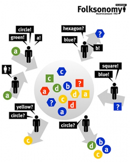

")
")
Semantic Web and Linked Data
The Semantic Web is an extension of the World Wide Web in which the meaning (semantics) of information and services is defined, making it possible to "understand" and satisfy the requests of people and machines to use the web content. The Semantic Web term was coined in early 2000s to refer to this extension, and since then a large amount of research has been done, providing a number of relevant results in the area.
The key foundations of the Semantic Web are ontologies and annotations. Ontologies, which are normally represented in the RDF Schema or OWL languages, describe formally shared conceptualizations of a domain (e.g., people, meetings, etc.). Annotations allow binding ontology-based descriptions to existing Web resources (e.g., saying that the information contained in web page refers to a person) and are normally described in RDF. In summary, HTML describes documents and the links between them, while RDF, RDF Schema and OWL, by contrast, can describe arbitrary things such as people, meetings, etc.
More recently, the concept of the Web of Linked Data has appeared as a mechanism for making all RDF data available using the HTTP protocol, as it is done with HTML documents. This concept has gained traction after the publication of large Semantic Web resources such as DBPedia, Bio2RDF, etc., and by the announcement by some Governments of their decision to make public data public, in a set of Open Government initiatives (e.g., data.gov, data.gov.uk).
Finally, the combination of Semantic Web and the Web2.0 world has given rise to the term Web3.0, or Social Semantic Web. Some of the open challenges here lie in the use of lightweight annotation approaches used in the Web2.0 context (e.g., tags), which lead to the emergence of common vocabularies also termed as folksonomies, and their relationship with existing more formal ontologies.
Projects
Currently we have one EU project in execution in this area, SEALS (link to its description page), and several large national projects: DynaLearn, España Virtual, Geobuddies, PlanetData, SEALS and Webn+1.
Previous projects in this area include the thematic network Knowledge Web and the project Esperonto.
Main results
The work done by our group in this research area has mainly focused on the provision of fundamental principles and tools for the generation of Semantic Web data and for its exploitation in applications. In the context of the generation of Semantic Web data (and more recently, on the generation of Linked Data), we have proposed a language that allows expressing mappings between relational databases and ontologies, called R2O, together with its associated mapping processor, ODEMapster, which allows generating RDF data from relational databases. Examples of use of this technology are provided in R2O, with a special mention to the recent generation of the GeoLinkedData portal, where we provide data from the Instituto Geográfico Nacional in Spain. In the context of exploiting Semantic Web data, one of the most relevant results from the group was one of the earliest Semantic Web portals, ODESeW, which allowed handling semantic data in a Web-based manner, and with different access and edition permissions according to the roles of the portal users.
The group has also concentrated on making methodological research on the systematic analysis of the key components of any Semantic Web application, and on the benchmarking of all kinds of semantic technologies. In this area, some of the most relevant results are the Semantic Web Framework and the SEALS platform, together with the ongoing EON workshops.
Finally, in the area of Social Semantic Web, which covers the combination of Semantic Web and Web2.0 technologies and approaches, the group has produced some relevant results on the assignment of semantic information to tags available in folksonomies that will be publish shortly.
Some of the most relevant publications in this area are:
There are also some software downloads or available services at : R20 and ODEMapster, ODESeW, geoLinkedData, vocab-express.
Members
This research area is led by Asunción Gómez-Pérez and Óscar Corcho, and the team behind is formed by the postdoctoral researcher Raúl García-Castro, and by the PhD students Héctor Andres García-Silva, Boris Villazón, Freddy Priyatna, Luis Vilches and Miguel Esteban.
Additional links
Job opportunities
There are currently no job offers or studentships available in this research area. For offers in other areas of the group, please check in our job opportunities section.
However, you may contact Asunción Gómez-Pérez or Oscar Corcho to check whether there are any potential open positions in the near future.

Created under Creative Commons License - 2015 OEG.